Esta tarea consiste en instalar un CMS de tecnología PHP en un servidor local. Los pasos que tendrás que dar los siguientes:
Tarea 1: Instalación de un servidor LAMP
- Crea una instancia de vagrant basado en un box debian o ubuntu
He creado una máquina virtual utilizando Vagrant y VirtualBox, mediante el siguiente fichero VagrantFile:
# -*- mode: ruby -*-
# vi: set ft=ruby :
Vagrant.configure("2") do |config|
config.vm.define :servidor1 do |servidor1|
servidor1.vm.box = "debian/buster64"
servidor1.vm.network "private_network", ip: "192.168.30.15"
end
end
- Instala en esa máquina virtual toda la pila LAMP
- Entrega una documentación resumida donde expliques los pasos fundamentales para realizar esta tarea.
Una vez tenemos la máquina lista, vamos a instalar el servidor LAMP, que hace referencia a:
- Linux, el sistema operativo
- Apache, el servidor web
- MySQL/MariaDB, el gestor de bases de datos
- PHP, el lenguaje de programación
Antes de nada voy a preparar la máquina para la instalación, voy a actualizar los paquetes instalados, ya que la box que estoy utilizando no es de la última versión de Debian.
apt update && apt upgrade -y && apt autoremove -y
El primer paso sería instalar nuestro gestor de base de datos, MySQL, por tanto, lo instalamos:
apt install mariadb-server mariadb-client -y
Una vez lo hemos instalado, vamos a configurar una serie de opciones con el comando mysql_secure_installation. Vamos a especificarle una contraseña de root, vamos a eliminar los usuarios anónimos, vamos a desactivar el acceso remoto a la base de datos, en resumen, vamos a restablecer la base de datos, con nuestras preferencias:
root@buster:/home/vagrant# mysql_secure_installation
NOTE: RUNNING ALL PARTS OF THIS SCRIPT IS RECOMMENDED FOR ALL MariaDB
SERVERS IN PRODUCTION USE! PLEASE READ EACH STEP CAREFULLY!
In order to log into MariaDB to secure it, we'll need the current
password for the root user. If you've just installed MariaDB, and
you haven't set the root password yet, the password will be blank,
so you should just press enter here.
Enter current password for root (enter for none):
OK, successfully used password, moving on...
Setting the root password ensures that nobody can log into the MariaDB
root user without the proper authorisation.
You already have a root password set, so you can safely answer 'n'.
Change the root password? [Y/n] Y
New password:
Re-enter new password:
Password updated successfully!
Reloading privilege tables..
... Success!
By default, a MariaDB installation has an anonymous user, allowing anyone
to log into MariaDB without having to have a user account created for
them. This is intended only for testing, and to make the installation
go a bit smoother. You should remove them before moving into a
production environment.
Remove anonymous users? [Y/n] Y
... Success!
Normally, root should only be allowed to connect from 'localhost'. This
ensures that someone cannot guess at the root password from the network.
Disallow root login remotely? [Y/n] Y
... Success!
By default, MariaDB comes with a database named 'test' that anyone can
access. This is also intended only for testing, and should be removed
before moving into a production environment.
Remove test database and access to it? [Y/n] Y
- Dropping test database...
... Success!
- Removing privileges on test database...
... Success!
Reloading the privilege tables will ensure that all changes made so far
will take effect immediately.
Reload privilege tables now? [Y/n] Y
... Success!
Cleaning up...
All done! If you've completed all of the above steps, your MariaDB
installation should now be secure.
Thanks for using MariaDB!
Procedemos a instalar el servidor web Apache, que lo vamos a instalar con este comando:
apt install apache2 apache2-utils -y
Y vamos a habilitar su servicio en cada inicio del sistema con:
systemctl enable apache2
Nos quedaría por instalar el servidor PHP, para ello:
apt install php libapache2-mod-php php-mysql -y
También he instalado las librerías php de apache y mysql, para que todos los sistemas puedan funcionar de manera conjunta.
Activamos el módulo de PHP de Apache.
a2enmod php7.3
Y por último introducimos la siguiente línea en forma de script PHP, que lo único que hace es crear un fichero llamado phpinfo.php dentro del directorio /var/www/html, en el que escribe <?php phpinfo(); ?>.
echo "<?php phpinfo(); ?>" | sudo tee /var/www/html/phpinfo.php
Hemos terminado de montar nuestro servidor LAMP.
Tarea 2: Instalación de drupal en mi servidor local
- Configura el servidor web con virtual hosting para que el CMS sea accesible desde la dirección:
www.nombrealumno-drupal.org.
En la ruta /etc/apache2/sites-available/ creamos un fichero de configuración para esta página. Podemos copiar el fichero llamado 000-default.conf para tener la estructura y luego lo modificamos:
root@buster:/etc/apache2/sites-available# cp 000-default.conf javierperezhidalgo-drupal.conf root@buster:/etc/apache2/sites-available# nano javierperezhidalgo-drupal.conf
Dentro de este fichero, establecemos la URL de la web en el apartado ServerName. Tiene que quedar así:
<\VirtualHost *:80\>
ServerName www.javierperezhidalgo-drupal.org
ServerAdmin webmaster@localhost
DocumentRoot /srv/www/drupal
ErrorLog ${APACHE_LOG_DIR}/error.log
CustomLog ${APACHE_LOG_DIR}/access.log combined
<\/VirtualHost\>
Atención: a esta configuración hay que eliminarle los carácteres \, que he tenido que introducir para escapar los carácteres siguientes, así que en caso de querer copiar la configuración, debemos tener en cuenta esto.
Creamos el enlace simbólico para activar el sitio web:
root@buster:/etc/apache2/sites-available# a2ensite javierperezhidalgo-drupal.conf
Reinicamos el servicio del servidor apache:
systemctl restart apache2
Si nos dirigimos a nuestra máquina anfitriona y añadimos al /etc/hosts esta línea, en el navegador podremos visualizar la web www.javierperezhidalgo-drupal.org:
192.168.30.15 www.javierperezhidalgo-drupal.org
La página web tiene este aspecto:
- Crea un usuario en la base de datos para trabajar con la base de datos donde se van a guardar los datos del CMS.
Para crear un usario en MySQL:
root@buster:/var/www/html# mysql -u root -p Enter password: Welcome to the MariaDB monitor. Commands end with ; or \g. Your MariaDB connection id is 65 Server version: 10.3.27-MariaDB-0+deb10u1 Debian 10 Copyright (c) 2000, 2018, Oracle, MariaDB Corporation Ab and others. Type 'help;' or '\h' for help. Type '\c' to clear the current input statement. MariaDB [(none)]> CREATE DATABASE drupal; Query OK, 1 row affected (0.002 sec) MariaDB [(none)]> CREATE USER 'drupal' IDENTIFIED BY 'contraseña'; Query OK, 0 rows affected (0.001 sec) MariaDB [(none)]> GRANT ALL PRIVILEGES ON drupal.* TO 'drupal'; Query OK, 0 rows affected (0.000 sec) MariaDB [(none)]> exit Bye
Además de crear el usuario drupal, le he concedido todos los permisos para tener acceso y control sobre todas las tablas y bases de datos.
- Descarga la versión que te parezca más oportuna de Drupal y realiza la instalación.
Para descargar Drupal en su última versión, que en este momento es la 9, nos dirigimos a la página oficial de Drupal. Copiamos la ruta del enlace de descarga del archivo, en mi caso prefiero el tar.gz y lo descargamos en nuestro servidor LAMP con la utilidad wget.
root@buster:~# wget https://www.drupal.org/download-latest/tar.gz --2020-12-28 13:18:56-- https://www.drupal.org/download-latest/tar.gz Resolving www.drupal.org (www.drupal.org)... 151.101.134.217 Connecting to www.drupal.org (www.drupal.org)|151.101.134.217|:443... connected. HTTP request sent, awaiting response... 302 Moved Temporarily Location: https://ftp.drupal.org/files/projects/drupal-9.1.0.tar.gz [following] --2020-12-28 13:18:57-- https://ftp.drupal.org/files/projects/drupal-9.1.0.tar.gz Resolving ftp.drupal.org (ftp.drupal.org)... 151.101.134.217 Connecting to ftp.drupal.org (ftp.drupal.org)|151.101.134.217|:443... connected. HTTP request sent, awaiting response... 200 OK Length: 17741953 (17M) [application/octet-stream] Saving to: ‘tar.gz’ tar.gz 100%[=====================================>] 16.92M 8.86MB/s in 1.9s 2020-12-28 13:18:59 (8.86 MB/s) - ‘tar.gz’ saved [17741953/17741953] root@buster:~# tar xf tar.gz -C /srv/www/
Hemos descargado Drupal y lo hemos descomprimido en la ruta en la que se encuentra el sitio web, en mi caso, /srv/www/. Para utilizar esta ruta, debemos modificar el fichero apache2.conf, que actualmente posee esta configuración:
<\Directory /var/www/\>
Options Indexes FollowSymLinks
AllowOverride None
Require all granted
<\/Directory\>
#<\Directory /srv/\>
# Options Indexes FollowSymLinks
# AllowOverride None
# Require all granted
#<\/Directory\>
Atención: a esta configuración hay que eliminarle los carácteres \, que he tenido que introducir para escapar los carácteres siguientes, así que en caso de querer copiar la configuración, debemos tener en cuenta esto.
Esto indica que mostrará todos los ficheros de las páginas alojadas en la ruta /var/www/. Lo que debemos hacer es comentar estas líneas y descomentar las de abajo que hacen referencia a la ruta /srv/ y todos sus hijos:
#<\Directory /var/www/\>
# Options Indexes FollowSymLinks
# AllowOverride None
# Require all granted
#<\/Directory\>
<\Directory /srv/\>
Options Indexes FollowSymLinks
AllowOverride None
Require all granted
<\/Directory\>
Atención: a esta configuración hay que eliminarle los carácteres \, que he tenido que introducir para escapar los carácteres siguientes, así que en caso de querer copiar la configuración, debemos tener en cuenta esto.
Además conviene crear un enlace simbólico sobre el directorio de Drupal para tener un nombre sin números de versión. Hemos otorgado al usuario www-data como dueño del directorio y su contenido al servidor web.
root@buster:~# ln -s /srv/www/drupal-9.1.0/ /srv/www/drupal root@buster:~# chown -R www-data:www-data /srv/www/drupal/
También necesitamos algunas extensiones de PHP:
apt install php-gd php-mbstring php-xml -y
Drupal puede hacer uso del sistema de reescritura de URLs, basado en el módulo Rewrite de Apache, que no está activado por defecto. Este módulo permite crear direcciones URL alternativas a las dinámicas generadas por la programación de nuestros sitio web, de tal modo que sean más legibles y fáciles de recordar. Activamos el módulo Rewrite:
a2enmod rewrite
Ya tendríamos activado el módulo Rewrite de Apache, pero nos quedaría por configurar nuestra aplicación Drupal para que haga uso de él. Para ello, nos dirigimos al fichero de configuración del virtualhost de Drupal e introducimos el siguiente bloque, que permite, entre ellos, el uso de archivos .htaccess.
<\Directory /srv/www/drupal>
AllowOverride all
<\/Directory>
Atención: a esta configuración hay que eliminarle los carácteres \, que he tenido que introducir para escapar los carácteres siguientes, así que en caso de querer copiar la configuración, debemos tener en cuenta esto.
¿Y para qué hacemos esto?
Pues bien, porque en la carpeta drupal que hemos obtenido al descomprimir el paquete descargado, ya nos encontramos con un fichero de este tipo, que viene configurado para solucionar el problema de las URLs limpias.
De manera que el fichero del virtualhost quedaría con el siguiente aspecto:
<\VirtualHost *:80\>
ServerName www.javierperezhidalgo-drupal.org
ServerAdmin webmaster@localhost
DocumentRoot /srv/www/drupal
ErrorLog ${APACHE_LOG_DIR}/error.log
CustomLog ${APACHE_LOG_DIR}/access.log combined
<\Directory /srv/www/drupal/\>
AllowOverride All
<\/Directory\>
<\/VirtualHost\>
Atención: a esta configuración hay que eliminarle los carácteres \, que he tenido que introducir para escapar los carácteres siguientes, así que en caso de querer copiar la configuración, debemos tener en cuenta esto.
Aplicamos los cambios en la configuración reiniciando el servidor web:
systemctl restart apache2
En este punto ya podemos hacer uso del Instalador Web de Drupal. Accedemos a la web que hemos configurado antes con la URL http://www.javierperezhidalgo-drupal.org, y se nos abrirá el instalador.

- Seleccionamos el idioma deseado.
- Seleccionamos el perfil de la instalación, en mi caso estándar.
- Configuramos la base de datos:
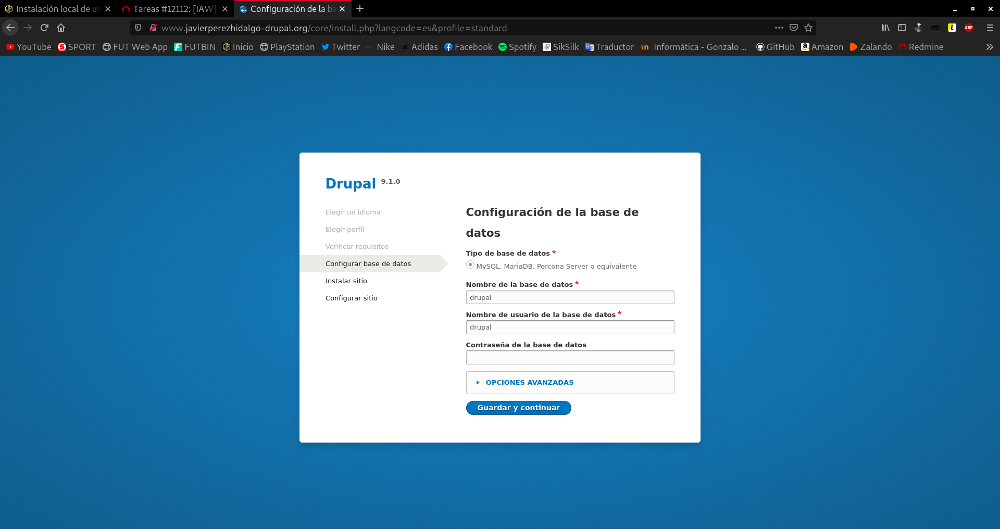
Y ya comienza el proceso de instalación:

Terminada la instalación llega el momento de configurar la identidad del sitio y crear el usuario administrador.

Completamos según nuestras preferencias y guardamos y listo:

- Realiza una configuración mínima de la aplicación (Cambia la plantilla, crea algún contenido, …)
Para cambiar el tema de nuestro CMS, nos dirigimos a la opción que nos aparece arriba, Apariencia y seleccionamos + Instalar nuevo tema, introducimos el enlace de descarga del tema que queremos añadir y listo. Cuidado, tenemos que comprobar que el tema que vamos a instalar es compatible con la versión de Drupal que estamos utilizando.
Puede ser que no nos aparezca el botón + Instalar nuevo tema. En este caso, debemos dirigirnos a la pestaña Contenido y en ésta, activar el módulo Update Manager. Hecho esto, ya nos aparecería este botón.
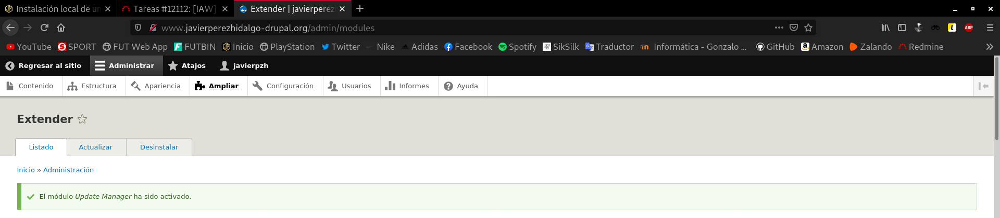
Una vez tenemos instalado el tema que queremos, lo seleccionamos como activo:
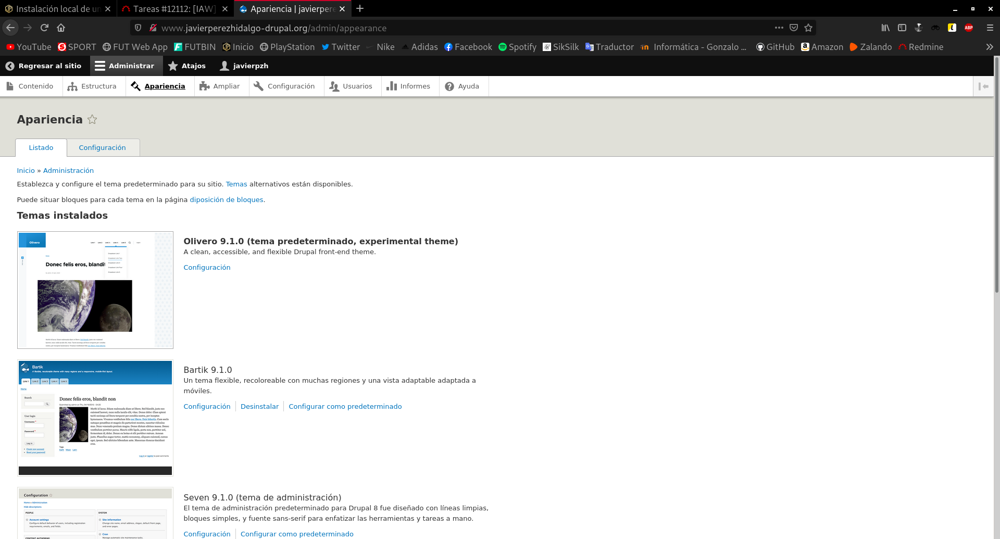
Y ya hemos cambiado el tema:

Vamos a añadir alguna entrada, para ver como se mostraría el contenido. Para ello en la parte superior de las opciones, donde dice Contenido, clickamos en + Añadir contenido, y se nos abrirá una especie de editor, que configuramos a nuestro gusto y guardamos los cambios.
Así quedaría nuestra nueva publicación:
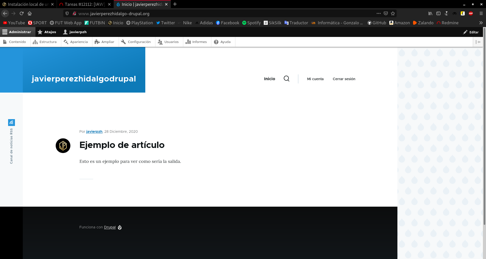
- Instala un módulo para añadir alguna funcionalidad a Drupal.
Para instalar un nuevo módulo en Drupal, es bastante sencillo y parecido a los temas. Vamos a la opción Ampliar, clickamos en + Instalar nuevo módulo, introducimos el enlace de descarga del módulo que queremos añadir y listo. Al igual que con el tema, tenemos que verificar que funciona con nuestra versión de Drupal.
En mi caso, voy a instalar un módulo llamado AddToAny que permite compartir los artículos y entradas de la web a través de nuestras redes sociales.
Activamos el nuevo módulo:
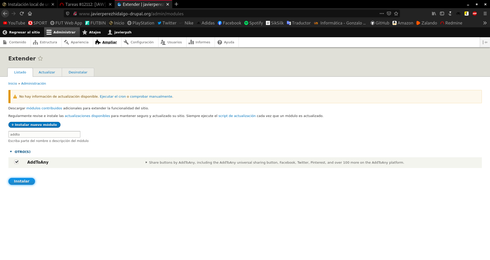
Observamos como en la página de inicio, ahora nos aparece un pequeño menú con varias redes sociales para compartir el artículo.
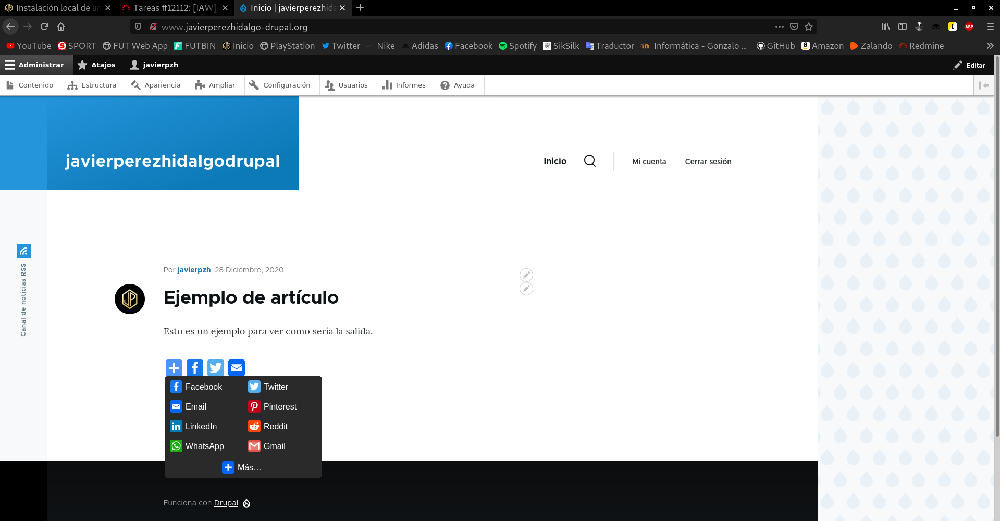
Tarea 3: Configuración multinodo
- Realiza un copia de seguridad de la base de datos.
Realizamos una copia de seguridad de la base de datos de Drupal que tenemos en MySQL, mediante el comando:
root@buster:~# mysqldump -u drupal -p drupal > copiaseguridaddrupal.sql Enter password: root@buster:~# ls copiaseguridaddrupal.sql
Le pasamos dos parámetros: la opción -u indica el nombre de usuario y la opción -p el nombre de la base de datos.
- Crea otra máquina con Vagrant, conectada con una red interna a la anterior y configura un servidor de base de datos.
Modifico el escenario creado antes y queda así:
# -*- mode: ruby -*-
# vi: set ft=ruby :
Vagrant.configure("2") do |config|
config.vm.define :servidor1 do |servidor1|
servidor1.vm.box = "debian/buster64"
servidor1.vm.network "private_network", ip: "192.168.30.15"
end
config.vm.define :maquina2 do |maquina2|
maquina2.vm.box = "debian/buster64"
maquina2.vm.network "private_network", ip: "192.168.30.30"
end
end
En la nueva máquina llamada maquina2 hay que configurar el nuevo servidor de base de datos, para ello previamente preparo y actualizo los paquetes, e instalo los relativos a MySQL:
apt update && apt upgrade -y && apt autoremove -y && apt install mariadb-server mariadb-client -y
Una vez lo hemos instalado, vamos a configurar una serie de opciones con el comando mysql_secure_installation. Vamos a especificarle una contraseña de root, vamos a eliminar los usuarios anónimos, vamos a desactivar el acceso remoto a la base de datos, en resumen, vamos a restablecer la base de datos, con nuestras preferencias:
root@buster:/home/vagrant# mysql_secure_installation
NOTE: RUNNING ALL PARTS OF THIS SCRIPT IS RECOMMENDED FOR ALL MariaDB
SERVERS IN PRODUCTION USE! PLEASE READ EACH STEP CAREFULLY!
In order to log into MariaDB to secure it, we'll need the current
password for the root user. If you've just installed MariaDB, and
you haven't set the root password yet, the password will be blank,
so you should just press enter here.
Enter current password for root (enter for none):
OK, successfully used password, moving on...
Setting the root password ensures that nobody can log into the MariaDB
root user without the proper authorisation.
You already have a root password set, so you can safely answer 'n'.
Change the root password? [Y/n] Y
New password:
Re-enter new password:
Password updated successfully!
Reloading privilege tables..
... Success!
By default, a MariaDB installation has an anonymous user, allowing anyone
to log into MariaDB without having to have a user account created for
them. This is intended only for testing, and to make the installation
go a bit smoother. You should remove them before moving into a
production environment.
Remove anonymous users? [Y/n] Y
... Success!
Normally, root should only be allowed to connect from 'localhost'. This
ensures that someone cannot guess at the root password from the network.
Disallow root login remotely? [Y/n] Y
... Success!
By default, MariaDB comes with a database named 'test' that anyone can
access. This is also intended only for testing, and should be removed
before moving into a production environment.
Remove test database and access to it? [Y/n] Y
- Dropping test database...
... Success!
- Removing privileges on test database...
... Success!
Reloading the privilege tables will ensure that all changes made so far
will take effect immediately.
Reload privilege tables now? [Y/n] Y
... Success!
Cleaning up...
All done! If you've completed all of the above steps, your MariaDB
installation should now be secure.
Thanks for using MariaDB!
- Crea un usuario en la base de datos para trabajar con la nueva base de datos.
Para crear un usario en MySQL:
root@buster:/home/vagrant# mysql -u root -p Enter password: Welcome to the MariaDB monitor. Commands end with ; or \g. Your MariaDB connection id is 57 Server version: 10.3.27-MariaDB-0+deb10u1 Debian 10 Copyright (c) 2000, 2018, Oracle, MariaDB Corporation Ab and others. Type 'help;' or '\h' for help. Type '\c' to clear the current input statement. MariaDB [(none)]> CREATE DATABASE drupal; Query OK, 1 row affected (0.002 sec) MariaDB [(none)]> CREATE USER 'drupal' IDENTIFIED BY 'contraseña'; Query OK, 0 rows affected (0.001 sec) MariaDB [(none)]> GRANT ALL PRIVILEGES ON drupal.* TO 'drupal'; Query OK, 0 rows affected (0.001 sec) MariaDB [(none)]> exit Bye
- Restaura la copia de seguridad en el nuevo servidor de base datos.
Para mover la copia de seguridad de la base de datos que hemos realizado en pasos anteriores, en la máquina servidor1 he instalado la utilidad rclone, he configurado mi cuenta de Dropbox y he copiado el archivo. Si quieres aprender más sobre rclone puedes visitar este post.
Podríamos haberlo hecho con el típico comando scp, pero en caso de querer utilizarlo, tendríamos que establecer una contraseña en las máquinas, ya que Vagrant por defecto no deja que nos conectemos por SSH si no utilizamos la clave privada, y luego configurar en el fichero /etc/ssh/sshd_config la línea PasswordAuthentication no y sustituir el no por un yes, y reiniciar el servicio SSH, ya que hemos tocado su configuración.
Ahora voy a configurar la misma cuenta de Dropbox con rclone en la máquina maquina2, y voy a descargar la copia de seguridad de la base de datos.
root@buster:~# rclone copy dropbox:/rclone/copiaseguridaddrupal.sql /home/vagrant/ root@buster:~# ls copiaseguridaddrupal.sql
Ya tengo la copia de seguridad en la maquina2, que es donde quiero restaurarla. Para restaurar una copia de seguridad de una base de datos en MySQL, introducimos el siguiente comando:
root@buster:~# mysql -u drupal -p drupal < copiaseguridaddrupal.sql Enter password: root@buster:~#
El parámetro -u indica el nombre de usuario y -p el nombre de la base de datos, donde se va a restaurar la copia.
Si miramos las bases de datos del usuario drupal:
root@buster:~# mysql -u drupal -p Enter password: Welcome to the MariaDB monitor. Commands end with ; or \g. Your MariaDB connection id is 59 Server version: 10.3.27-MariaDB-0+deb10u1 Debian 10 Copyright (c) 2000, 2018, Oracle, MariaDB Corporation Ab and others. Type 'help;' or '\h' for help. Type '\c' to clear the current input statement. MariaDB [(none)]> show databases; +--------------------+ | Database | +--------------------+ | drupal | | information_schema | +--------------------+ 2 rows in set (0.001 sec)
Si entramos en la base de datos drupal y miramos las tablas:
MariaDB [(none)]> use drupal; Reading table information for completion of table and column names You can turn off this feature to get a quicker startup with -A Database changed MariaDB [drupal]> show tables; +----------------------------------+ | Tables_in_drupal | +----------------------------------+ | batch | | block_content | | block_content__body | | block_content_field_data | | block_content_field_revision | | block_content_revision | | block_content_revision__body | | cache_bootstrap | | cache_config | | cache_container | | cache_data | | cache_default | | cache_discovery | | cache_dynamic_page_cache | | cache_entity | | cache_menu | | cache_render | | cachetags | | comment | | comment__comment_body | | comment_entity_statistics | | comment_field_data | | config | | file_managed | | file_usage | | history | | key_value | | key_value_expire | | locale_file | | locales_location | | locales_source | | locales_target | | menu_link_content | | menu_link_content_data | | menu_link_content_field_revision | | menu_link_content_revision | | menu_tree | | node | | node__body | | node__comment | | node__field_image | | node__field_tags | | node_access | | node_field_data | | node_field_revision | | node_revision | | node_revision__body | | node_revision__comment | | node_revision__field_image | | node_revision__field_tags | | path_alias | | path_alias_revision | | queue | | router | | search_dataset | | search_index | | search_total | | semaphore | | sequences | | sessions | | shortcut | | shortcut_field_data | | shortcut_set_users | | taxonomy_index | | taxonomy_term__parent | | taxonomy_term_data | | taxonomy_term_field_data | | taxonomy_term_field_revision | | taxonomy_term_revision | | taxonomy_term_revision__parent | | user__roles | | user__user_picture | | users | | users_data | | users_field_data | | watchdog | +----------------------------------+ 76 rows in set (0.001 sec) MariaDB [drupal]>
Vemos que la copia se ha restaurado correctamente.
- Desinstala el servidor de base de datos en el servidor principal.
En servidor1 desinstalamos el servidor de base de datos y borramos todos sus datos:
apt remove --purge mariadb-server mariadb-client -y && apt autoremove -y
Probamos a acceder a la página de Drupal ahora:
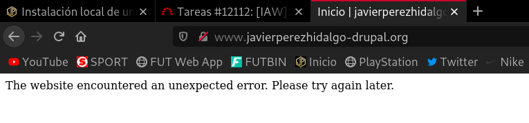
Obviamente, no podemos acceder a la web, ya que ahora mismo no se encuentra conectada a ninguna base de datos.
- Realiza los cambios de configuración necesarios en Drupal para que la página funcione.
En este punto, queremos volver a tener disponible nuestra web de Drupal, pero funcionando con la base de datos en la nueva máquina, es decir, en maquina2.
Tenemos que cambiar la configuración de Drupal, para ello nos dirigimos al fichero que se encuentra en la ruta /srv/www/drupal-9.1.0/sites/default/settings.php de la máquina servidor1, y al final del archivo, se encuentra la configuración de la base de datos que utiliza Drupal. Como es obvio, está configurada como que la base de datos está en el mismo equipo, por tanto está configurado en localhost. Aquí viene el primer cambio, pues debemos remover localhost y sustituirlo por la IP de la máquina donde se encuentra la nueva base de datos sobre la que va a funcionar Drupal, que es la 192.168.30.30.
$databases['default']['default'] = array ( 'database' => 'drupal', 'username' => 'drupal', 'password' => 'contraseña', 'prefix' => '', 'host' => '192.168.30.30', 'port' => '3306', 'namespace' => 'Drupal\\Core\\Database\\Driver\\mysql', 'driver' => 'mysql', );
Una vez hecho esto, tendríamos que dirigirnos a la máquina donde hemos migrado la copia de seguridad, es decir la llamada maquina2, y tenemos que permitirle el acceso remoto a la base de datos.
El primer paso es editar el fichero de configuración que se encuentra en /etc/mysql/mariadb.conf.d/50-server.cnf y tenemos que editar, y en caso de estar comentadas la línea bind-address. En esta línea, tenemos que cambiar la IP, ya que por defecto aparece la de localhost, y esto hace que el servidor esté configurado para que solo escuche peticiones de localhost. Si queremos que escuche las peticiones de todas las interfaces de red, la línea debe quedar así:
bind-address = 0.0.0.0
En último lugar, vamos a permitirle tanto a nuestro usuario drupal, como a root, que puedan ser accesibles desde otros equipos.
root@buster:~# mysql -u root -p Enter password: Welcome to the MariaDB monitor. Commands end with ; or \g. Your MariaDB connection id is 61 Server version: 10.3.27-MariaDB-0+deb10u1 Debian 10 Copyright (c) 2000, 2018, Oracle, MariaDB Corporation Ab and others. Type 'help;' or '\h' for help. Type '\c' to clear the current input statement. MariaDB [(none)]> GRANT ALL PRIVILEGES ON *.* TO 'root'@'%' IDENTIFIED BY 'contraseña' WITH GRANT OPTION; Query OK, 0 rows affected (0.001 sec) MariaDB [(none)]> GRANT ALL PRIVILEGES ON *.* TO 'drupal'@'%' IDENTIFIED BY 'contraseña' WITH GRANT OPTION; Query OK, 0 rows affected (0.000 sec) MariaDB [(none)]> FLUSH PRIVILEGES; Query OK, 0 rows affected (0.001 sec) MariaDB [(none)]> exit Bye
Reiniciamos el servidor:
systemctl restart mysqld
Accedemos a la dirección www.javierperezhidalgo-drupal.org para ver si ya vuelve a funcionar:
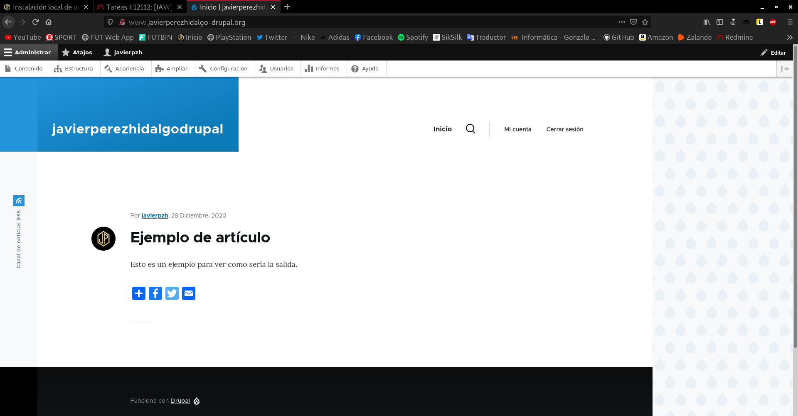
Ya podemos acceder de nuevo a nuestro sitio web Drupal que esta vez está utilizando una base de datos que se encuentra en otra máquina.
Tarea 4: Instalación de otro CMS PHP
-
Elige otro CMS realizado en PHP y realiza la instalación en tu infraestructura.
-
Configura otro Virtualhost y elige otro nombre en el mismo dominio.
He decidido elegir el CMS llamado Anchor. Este CMS cuenta con una interfaz de usuario muy simple. Instalar Anchor nos llevará muy poco tiempo. Soporta Markdown editor, campos personalizados, múltiples idiomas y la posibilidad de instalar múltiples temas.
Si nos ayudamos de la página oficial de Anchor, la descarga la podemos realizar desde aquí.
Como antes para realizar la migración, desinstalé MySQL de la máquina servidor1, voy a volver a realizar la instalación y configuración, esta vez sin tantos detalles.
root@buster:~# apt install mariadb-server mariadb-client -y root@buster:~# mysql_secure_installation ...
Creamos el usuario anchor de la base de datos y le otorgamos los permisos:
root@buster:~# mysql -u root -p Enter password: Welcome to the MariaDB monitor. Commands end with ; or \g. Your MariaDB connection id is 44 Server version: 10.3.27-MariaDB-0+deb10u1 Debian 10 Copyright (c) 2000, 2018, Oracle, MariaDB Corporation Ab and others. Type 'help;' or '\h' for help. Type '\c' to clear the current input statement. MariaDB [(none)]> CREATE DATABASE anchor; Query OK, 1 row affected (0.002 sec) MariaDB [(none)]> CREATE USER anchor IDENTIFIED BY 'contraseña'; Query OK, 0 rows affected (0.003 sec) MariaDB [(none)]> GRANT ALL PRIVILEGES ON anchor. * TO 'anchor'; Query OK, 0 rows affected (0.002 sec) MariaDB [(none)]> exit Bye
Necesitamos instalar composer en el sistema, que es un administrador de dependencias PHP. También necesitamos tener instalado el paquete git, ya que nos hará falta durante la instalación:
apt install composer git -y
Descargamos y creamos la página de Anchor utilizando composer con el comando:
root@buster:/srv/www# composer create-project anchorcms/anchor-cms
Do not run Composer as root/super user! See https://getcomposer.org/root for details
Continue as root/super user [yes]? yes
Creating a "anchorcms/anchor-cms" project at "./anchor-cms"
Installing anchorcms/anchor-cms (0.12.7)
Failed to download anchorcms/anchor-cms from dist: The zip extension and unzip command are both missing, skipping.
Your command-line PHP is using multiple ini files. Run `php --ini` to show them.
Now trying to download from source
- Syncing anchorcms/anchor-cms (0.12.7) into cache
- Installing anchorcms/anchor-cms (0.12.7): Cloning 08e8e50790 from cache
Created project in /srv/www/anchor-cms
[Composer\Json\JsonValidationException]
"./composer.json" does not match the expected JSON schema
create-project [-s|--stability STABILITY] [--prefer-source] [--prefer-dist] [--repository REPOSITORY] [--repository-url REPOSITORY-URL] [--add-repository] [--dev] [--no-dev] [--no-custom-installers] [--no-scripts] [--no-progress] [--no-secure-http] [--keep-vcs] [--remove-vcs] [--no-install] [--ignore-platform-req IGNORE-PLATFORM-REQ] [--ignore-platform-reqs] [--ask] [--] [] [] []
Antes de pasar con el error del que nos ha informado, he cambiado el nombre del directorio:
root@buster:/srv/www# mv anchor-cms anchor
Si nos fijamos, nos ha reportado un mensaje de error. Nos indica que ha detectado un fallo en el fichero composer.json. Para solucionar este error, debemos editar el fichero:
root@buster:/srv/www/anchor# nano composer.json
En la línea que hace referencia al tipo, debemos cambiar el valor, que por defecto viene CMS, debemos indicar el tipo con letras minúsculas, de forma que quede así:
"type": "cms"
Corremos el instalador de nuevo:
root@buster:/srv/www/anchor# composer install Do not run Composer as root/super user! See https://getcomposer.org/root for details Continue as root/super user [yes]? yes Installing dependencies from lock file (including require-dev) Verifying lock file contents can be installed on current platform. Warning: The lock file is not up to date with the latest changes in composer.json. You may be getting outdated dependencies. It is recommended that you run `composer update` or `composer update`. Package operations: 13 installs, 0 updates, 0 removals Failed to download indigophp/hash-compat from dist: The zip extension and unzip command are both missing, skipping. Your command-line PHP is using multiple ini files. Run `php --ini` to show them. Now trying to download from source - Syncing indigophp/hash-compat (v1.1.0) into cache Failed to download ircmaxell/password-compat from dist: The zip extension and unzip command are both missing, skipping. Your command-line PHP is using multiple ini files. Run `php --ini` to show them. Now trying to download from source - Syncing ircmaxell/password-compat (v1.0.4) into cache Failed to download ircmaxell/security-lib from dist: The zip extension and unzip command are both missing, skipping. Your command-line PHP is using multiple ini files. Run `php --ini` to show them. Now trying to download from source - Syncing ircmaxell/security-lib (v1.1.0) into cache Failed to download ircmaxell/random-lib from dist: The zip extension and unzip command are both missing, skipping. Your command-line PHP is using multiple ini files. Run `php --ini` to show them. Now trying to download from source - Syncing ircmaxell/random-lib (v1.2.0) into cache Failed to download peridot-php/leo from dist: The zip extension and unzip command are both missing, skipping. Your command-line PHP is using multiple ini files. Run `php --ini` to show them. Now trying to download from source - Syncing peridot-php/leo (1.6.1) into cache Failed to download symfony/polyfill-mbstring from dist: The zip extension and unzip command are both missing, skipping. Your command-line PHP is using multiple ini files. Run `php --ini` to show them. Now trying to download from source - Syncing symfony/polyfill-mbstring (v1.7.0) into cache Failed to download psr/log from dist: The zip extension and unzip command are both missing, skipping. Your command-line PHP is using multiple ini files. Run `php --ini` to show them. Now trying to download from source - Syncing psr/log (1.0.2) into cache Failed to download symfony/debug from dist: The zip extension and unzip command are both missing, skipping. Your command-line PHP is using multiple ini files. Run `php --ini` to show them. Now trying to download from source - Syncing symfony/debug (v4.0.5) into cache Failed to download symfony/console from dist: The zip extension and unzip command are both missing, skipping. Your command-line PHP is using multiple ini files. Run `php --ini` to show them. Now trying to download from source - Syncing symfony/console (v3.4.5) into cache Failed to download phpunit/php-timer from dist: The zip extension and unzip command are both missing, skipping. Your command-line PHP is using multiple ini files. Run `php --ini` to show them. Now trying to download from source - Syncing phpunit/php-timer (1.0.9) into cache Failed to download peridot-php/peridot-scope from dist: The zip extension and unzip command are both missing, skipping. Your command-line PHP is using multiple ini files. Run `php --ini` to show them. Now trying to download from source - Syncing peridot-php/peridot-scope (1.3.0) into cache Failed to download evenement/evenement from dist: The zip extension and unzip command are both missing, skipping. Your command-line PHP is using multiple ini files. Run `php --ini` to show them. Now trying to download from source - Syncing evenement/evenement (v2.1.0) into cache Failed to download peridot-php/peridot from dist: The zip extension and unzip command are both missing, skipping. Your command-line PHP is using multiple ini files. Run `php --ini` to show them. Now trying to download from source - Syncing peridot-php/peridot (1.19.0) into cache - Installing indigophp/hash-compat (v1.1.0): Cloning 43a19f4209 from cache - Installing ircmaxell/password-compat (v1.0.4): Cloning 5c5cde8822 from cache - Installing ircmaxell/security-lib (v1.1.0): Cloning f3db6de12c from cache - Installing ircmaxell/random-lib (v1.2.0): Cloning e9e0204f40 from cache - Installing peridot-php/leo (1.6.1): Cloning 2a6f60f237 from cache - Installing symfony/polyfill-mbstring (v1.7.0): Cloning 78be803ce0 from cache - Installing psr/log (1.0.2): Cloning 4ebe3a8bf7 from cache - Installing symfony/debug (v4.0.5): Cloning 1721e4e7ef from cache - Installing symfony/console (v3.4.5): Cloning 067339e9b8 from cache - Installing phpunit/php-timer (1.0.9): Cloning 3dcf38ca72 from cache - Installing peridot-php/peridot-scope (1.3.0): Cloning b5cc7ac35b from cache - Installing evenement/evenement (v2.1.0): Cloning 6ba9a77787 from cache - Installing peridot-php/peridot (1.19.0): Cloning 1c573868d8 from cache Generating autoload files
Ahora sí hemos instalado correctamente Anchor como nuestro CMS.
Hemos otorgado a www-data como dueño del directorio y su contenido al servidor web.
root@buster:/srv/www/anchor# chown -R www-data:www-data /srv/
Solo nos quedaría configurar nuestro servidor web Apache para que sirviera la web. Para ello vamos a generar un fichero de configuración para Anchor:
root@buster:/etc/apache2/sites-available# cp javierperezhidalgo-drupal.conf anchor.conf root@buster:/etc/apache2/sites-available# nano anchor.conf
Dentro de este fichero especificamos la dirección de la web (ServerName) y el DocumentRoot, quedaría así:
<\VirtualHost *:80\>
ServerName www.javierperezhidalgoanchor.org
ServerAdmin webmaster@localhost
DocumentRoot /srv/www/anchor
ErrorLog ${APACHE_LOG_DIR}/error.log
CustomLog ${APACHE_LOG_DIR}/access.log combined
<\/VirtualHost\>
Atención: a esta configuración hay que eliminarle los carácteres \, que he tenido que introducir para escapar los carácteres siguientes, así que en caso de querer copiar la configuración, debemos tener en cuenta esto.
Habilitamos el sitio web para que Apache lo muestre y reiniciamos el servidor, como siempre hay que hacer cuando hagamos un cambio:
a2ensite anchor.conf
Por último, añadimos esta línea al fichero /etc/hosts del equipo anfitrión para que podamos ver la web en nuestro navegador.
192.168.30.15 www.javierperezhidalgoanchor.org
Introducimos en el navegador la dirección www.javierperezhidalgoanchor.org y nos saldrá el instalador de Anchor:
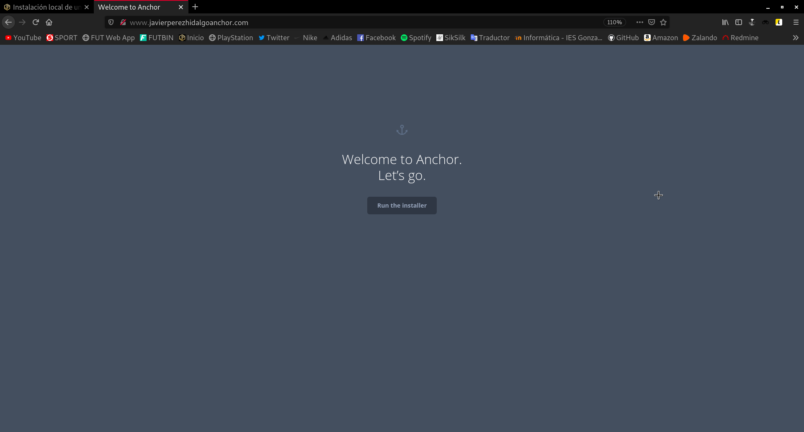
Vamos a realizar una instalación rápida, ya que es muy parecido al proceso que hemos realizado para Drupal.
En primer lugar indicamos el idioma y la zona horaria:
Especificamos la base de datos que va utilizar. La que previamente hemos creado en MySQL:
Configuramos el nombre de la página, la descripción, ...
Creamos la cuenta administradora del sitio web:
Y con esto ya hemos terminado la instalación de Anchor.
Así luce nuestra nueva página:

Hemos terminado la instalación de Anchor, pero me gustaría hacer una modificación. Y no es más, sino que volver a migrar nuestra base de datos a nuestra segunda máquina, es decir, a la maquina2, para así acceder a la base de datos remotamente.
Volvemos a repetir el mismo proceso que realizamos con Drupal, y en primer lugar, vamos a realizar una copia de seguridad y a copiarla a la segunda máquina:
root@buster:~# mysqldump -u anchor -p anchor > copiaseguridadanchor.sql root@buster:~# ls copiaseguridadanchor.sql copiaseguridaddrupal.sql
Le pasamos dos parámetros: la opción -u indica el nombre de usuario y la opción -p el nombre de la base de datos.
En este punto, ya podríamos desinstalar la base de datos existente en la máquina llamada servidor1.
apt remove --purge mariadb-server mariadb-client -y && apt autoremove -y
Si probamos a acceder ahora a nuestra web Anchor:
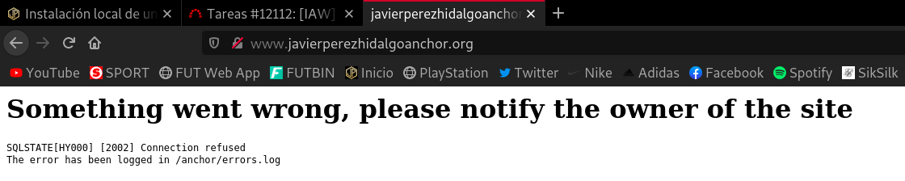
Vemos como efectivamente hemos eliminado correctamente la base de datos.
Hecho esto, en la maquina2, vamos a crear la base de datos y el usuario anchor.
root@buster:~# mysql -u root -p Enter password: Welcome to the MariaDB monitor. Commands end with ; or \g. Your MariaDB connection id is 39 Server version: 10.3.27-MariaDB-0+deb10u1 Debian 10 Copyright (c) 2000, 2018, Oracle, MariaDB Corporation Ab and others. Type 'help;' or '\h' for help. Type '\c' to clear the current input statement. MariaDB [(none)]> CREATE DATABASE anchor; Query OK, 1 row affected (0.001 sec) MariaDB [(none)]> CREATE USER 'anchor' IDENTIFIED BY 'contraseña'; Query OK, 0 rows affected (0.001 sec) MariaDB [(none)]> GRANT ALL PRIVILEGES ON anchor.* TO 'anchor'; Query OK, 0 rows affected (0.001 sec) MariaDB [(none)]> exit Bye
Copiamos el nuevo archivo a la maquina2, donde vamos a restaurar la copia de seguridad con el siguiente comando:
root@buster:~# mysql -u anchor -p anchor < copiaseguridadanchor.sql Enter password: root@buster:~#
Vamos a comprobar como efectivamente hemos restaurado todos los datos:
root@buster:~# mysql -u anchor -p Enter password: Welcome to the MariaDB monitor. Commands end with ; or \g. Your MariaDB connection id is 41 Server version: 10.3.27-MariaDB-0+deb10u1 Debian 10 Copyright (c) 2000, 2018, Oracle, MariaDB Corporation Ab and others. Type 'help;' or '\h' for help. Type '\c' to clear the current input statement. MariaDB [(none)]> show databases; +--------------------+ | Database | +--------------------+ | anchor | | information_schema | +--------------------+ 2 rows in set (0.001 sec) MariaDB [(none)]> use anchor; Reading table information for completion of table and column names You can turn off this feature to get a quicker startup with -A Database changed MariaDB [anchor]> show tables; +----------------------+ | Tables_in_anchor | +----------------------+ | anchor_categories | | anchor_category_meta | | anchor_comments | | anchor_extend | | anchor_meta | | anchor_page_meta | | anchor_pages | | anchor_pagetypes | | anchor_post_meta | | anchor_posts | | anchor_sessions | | anchor_user_meta | | anchor_users | +----------------------+ 13 rows in set (0.001 sec) MariaDB [anchor]>
Vemos que sí. Y por último, nos queda configurar nuestro CMS para que haga uso de esta base de datos. Para esto nos tenemos que dirigir al fichero db.php, que se encuentra en la ruta /srv/www/anchor/anchor/config/db.php de la máquina donde tenemos instalado nuestro CMS, es decir, en servidor1.
En él, nos encontraremos la configuración de la base de datos asociada al CMS. Ajustamos los nuevos parámetros que necesitamos, cambiando la dirección de la base de datos y estableciendo la IP de nuestra segunda máquina:
'mysql',
'prefix' => 'anchor_',
'connections' => [
'mysql' => [
'driver' => 'mysql',
'hostname' => '192.168.30.30',
'port' => '3306',
'username' => 'anchor',
'password' => 'contraseña',
'database' => 'anchor',
'charset' => 'utf8mb4'
]
]
];
Hecho esto, vamos a reiniciar nuestro servidor web y a comprobar que nuestro CMS vuelve a funcionar:
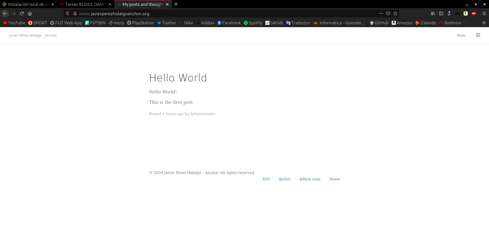
La respuesta es afirmativa, por tanto habríamos terminado el ejercicio.
Instalación de un CMS PHP que no utiliza base de datos
También voy a instalar un CMS llamado Pico. No tiene un backend para editar los datos (aunque existe un plugin para ello). No utiliza consultas a la base de datos, por lo tanto, es súper rápido. Es compatible con el formato Markdown y las plantillas twig.
Vamos a proceder a instalarlo.
Si nos ayudamos de la página oficial de Pico, la descarga la podemos realizar clonando un repositorio de GitHub. Por tanto necesitamos el paquete git en nuestro sistema:
apt install git -y
Clonamos el repositorio en /srv/www:
root@buster:/srv/www# git clone https://github.com/picocms/Pico.git
Hemos otorgado al usuario www-data como dueño del directorio y su contenido al servidor web.
root@buster:/srv/www# chown -R www-data:www-data /srv/
Descargamos el instalador y lo lanzamos mediante los siguientes comandos:
root@buster:/srv/www# apt install composer -y ... root@buster:/srv/www# php composer.phar create-project picocms/pico-composer pico ...
Hemos instalado el CMS Pico. Solo nos quedaría configurar Apache para que sirva este sitio web en la dirección www.javierperezhidalgopico.com. Primero creamos el fichero de configuración en /etc/apache2/sites-available, lo voy a llamar pico.conf. Añado las siguientes líneas:
<\VirtualHost *:80\>
ServerName www.javierperezhidalgopico.org
ServerAdmin webmaster@localhost
DocumentRoot /srv/www/pico
ErrorLog ${APACHE_LOG_DIR}/error.log
CustomLog ${APACHE_LOG_DIR}/access.log combined
<\/VirtualHost\>
Atención: a esta configuración hay que eliminarle los carácteres \, que he tenido que introducir para escapar los carácteres siguientes, así que en caso de querer copiar la configuración, debemos tener en cuenta esto.
Habilitamos el despliegue de la página:
a2ensite pico.conf
Reiniciamos el servicio:
systemctl restart apache2
Acabamos de lanzar nuestra página en Pico, si queremos visualizarla en nuestra máquina anfitrión, añadimos la siguiente línea al fichero /etc/hosts:
192.168.30.15 www.javierperezhidalgopico.org
Nos dirigimos a la web www.javierperezhidalgopico.org:
Ya hemos instalado Pico.
Tarea 5: Necesidad de otros servicios
La mayoría de los CMS tienen la posibilidad de mandar correos electrónicos (por ejemplo para notificar una nueva versión, notificar un comentario,…)
-
Instala un servidor de correo electrónico en tu servidor. Debes configurar un servidor relay de correo, para ello en el fichero
/etc/postfix/main.cf, debes poner la siguiente línea: -
Configura alguno de los CMS para utilizar tu servidor de correo y realiza una prueba de funcionamiento.
Para llevar a cabo este ejercicio, voy a configurar la web Drupal que instalé anteriormente.
Lo primero que debemos hacer, es dirigirnos hacia nuestra aplicación e instalarle el módulo llamado SMTP Authentication Support. Como ya sabemos, para instalar un módulo, debemos situarnos en la opción Ampliar, clickamos en + Instalar nuevo módulo, introducimos el enlace de descarga del módulo que queremos añadir y listo.
Lo instalo y lo añado:
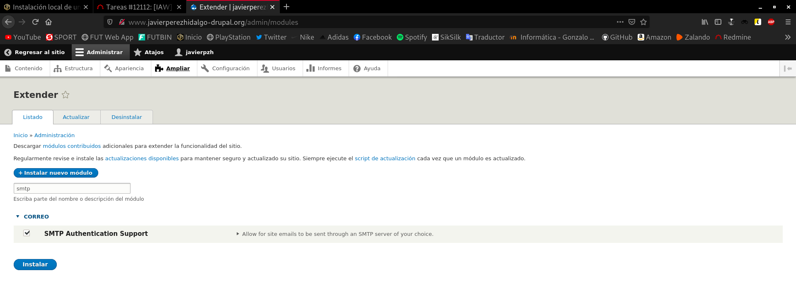
Debemos instalar composer, ya que vamos a necesitar hacer uso de una dependencia llamada phpmailer:
apt install composer -y
Instalado el manejador de dependencias, instalamos la propia dependencia:
root@buster:~# composer require phpmailer/phpmailer Do not run Composer as root/super user! See https://getcomposer.org/root for details Continue as root/super user [yes]? yes Using version ^6.2 for phpmailer/phpmailer ./composer.json has been created Running composer update phpmailer/phpmailer Loading composer repositories with package information Updating dependencies Lock file operations: 1 install, 0 updates, 0 removals - Locking phpmailer/phpmailer (v6.2.0) Writing lock file Installing dependencies from lock file (including require-dev) Package operations: 1 install, 0 updates, 0 removals - Downloading phpmailer/phpmailer (v6.2.0) - Installing phpmailer/phpmailer (v6.2.0): Extracting archive 5 package suggestions were added by new dependencies, use `composer suggest` to see details. Generating autoload files 1 package you are using is looking for funding. Use the `composer fund` command to find out more!
Hecho esto, tan solo nos quedaría configurar Drupal. Nos dirigimos a nuestra web, y vamos a proceder a configurar el nuevo módulo instalado.
.